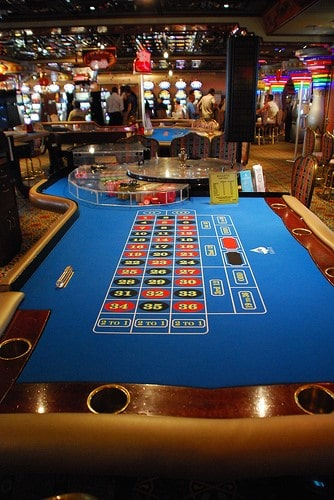

"Roulette table" (CC BY-SA 2.0) by Lisa Brewster
In a world dominated by social media, it is no wonder that the major platforms have formed close links with the gambling world. This fusion has sparked the phenomenon known as social casinos.
Land-based casinos are a familiar sight, having dominated the gambling scene for many years. These establishments can be found in major cities all over the world and feature heavily in popular culture with many movies, books and music videos using casinos as the central theme.
In recent years, these casinos have been joined by cutting-edge online versions which allow players to gamble from the comfort of their own home or on the move without the need to visit a purpose-made venue. They can also play and interact with fellow gamers from around the world, rather than those in their local region.
As a result, modern gamblers have more choice than ever before. There are casino options to suit everyone and the choice widens on a daily basis. This stretches from the types of casino available to the genres of the games that they house, as casinos battle to offer the biggest variety. These businesses have seen a massive surge in demand for their retro-themed games, as well as their connective live casino and social offerings.
This boom has also extended to mobile platforms with online casinos available across multiple devices and operating systems. Being able to wager on smartphones and tablets paved the way for more socially integrated gaming systems.
Online casinos now use social media such as on Facebook, Twitter and Instagram for more than just promoting games. Many of these social portals are now fully integrated into the gaming experience. Players can play games directly from their social media app and share the results with their friends.
Gambling activities that are carried out on social media are referred to as ‘social casinos’ and many operators now offer such services. The games are developed to be played directly within social media platforms and connect with the player's existing profile for ease of use and greater social flexibility.
The majority of this market is held by Facebook, which boasts more than a 60% share of an industry thought to be worth in excess of €3 billion today.
Any player connected to the internet on any device can play social casino games. And the good news is, many games are free to play. The social aspect is appealing as players can connect with their friends and like-minded gamers from all over the world to make the experience more exciting and more competitive.
This feeling of being connected to a community, combined with the convenience of play, is what makes social casinos so popular.
Live casinos are set to become a big part of this explosion. These are online casinos which allow players to come together in virtual gaming halls to compete for prizes. Many rooms have live dealers and players can interact with the dealers and other players as if in a real-life casino. And there is never an issue finding a seat at a table! Live casinos cover all the popular casino games and there are even dedicated poker and slot machine rooms. The fusion of social casinos and live casinos is just one development to look out for in this sector.
Image source: Pxhere.com
Many social casinos offer players the chance to get their name on a leaderboard. This brings prestige and kudos among friends and throughout the social gaming community. And, of course, the best players can win in-game prizes.
Social casinos are also bringing traditional gaming elements into casino games. This gamification means players play through different levels to unlock different aspects of the game, adding an extra sense of achievement. Players can even share rewards among their friends on these social platforms.
As new games are developed, more skill-based play is being integrated. This follows the trend set by eSports and fantasy sports games, where the focus has moved from random events and luck to acquired skill. This is expected to attract a wider demographic of player to the social casino market.
The rise in popularity of virtual reality headsets will also shape the course of social gaming as players look to interact in fully-customisable gaming environments where they can meet players face-to-face.
The overall goal is to increase the actual social interaction between players to create real communities linked by their favourite games on their favourite platforms. This will make it easier to monetise games as players spend more time in the games and advertisers have a better picture of the profile of gamers in each sector.
As social gaming grows, bigger names are being attracted to the market and this will mean more real money games. It is predicted this will bring massive growth to the market in the future.
Image source: Pxhere.com
In a recent interview CEO of Tangelo Games Vicenç Marti stated that, despite a slight slowdown in growth due to new app regulations, social casinos were the future of electronic gaming. The industry has remained resilient in the face of issues such as regional legislation and payment systems thanks to the way it embraces new innovations and fresh revenue streams.
The big focus at the moment is on instant Facebook games but new platforms such as blockchain could see further changes and improved growth as developers understand and harness the power of related technologies.
Among all this, there has been a renewed desire for online and land-based casinos to work in partnership for the benefit of both industries. This could also yield new initiatives, and closer alignment with regulators is also helping to shape the future of what is a truly global business.